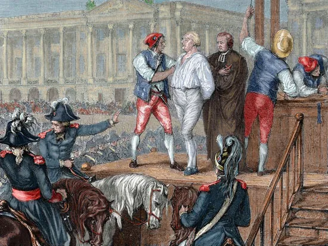
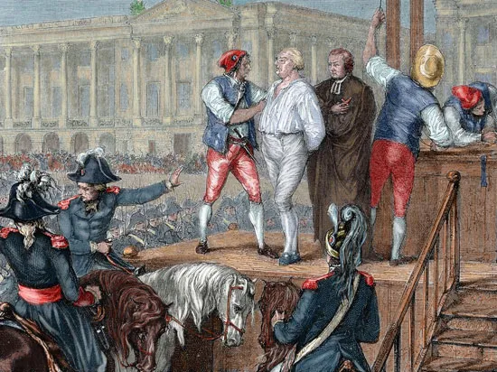

Georges Danton
Georges Danton fue uno de los grandes oradores y líderes de la Revolución Francesa. Nacido en 1759, fue una figura clave en el derrocamiento de la monarquía y en la formación de la Primera República Francesa. Su elocuencia lo convirtió en un portavoz del pueblo y en un símbolo de la energía revolucionaria.
Como miembro del Comité de Salvación Pública, Danton defendió medidas radicales al principio, pero más adelante pidió moderación y el fin del Reino del Terror. Esto lo enfrentó a Robespierre, quien lo consideró una amenaza para la estabilidad revolucionaria.
Danton fue arrestado, acusado de corrupción y traición, y finalmente ejecutado en la guillotina el 5 de abril de 1794. Su famosa frase antes de morir, "¡Mostrar mi cabeza al pueblo, vale la pena verla!", resume su carácter desafiante hasta el final.
Fue un revolucionario pragmático que buscó equilibrar la justicia con la estabilidad. Su caída refleja cómo la Revolución devoró incluso a sus propios fundadores cuando las tensiones internas se volvieron incontrolables.